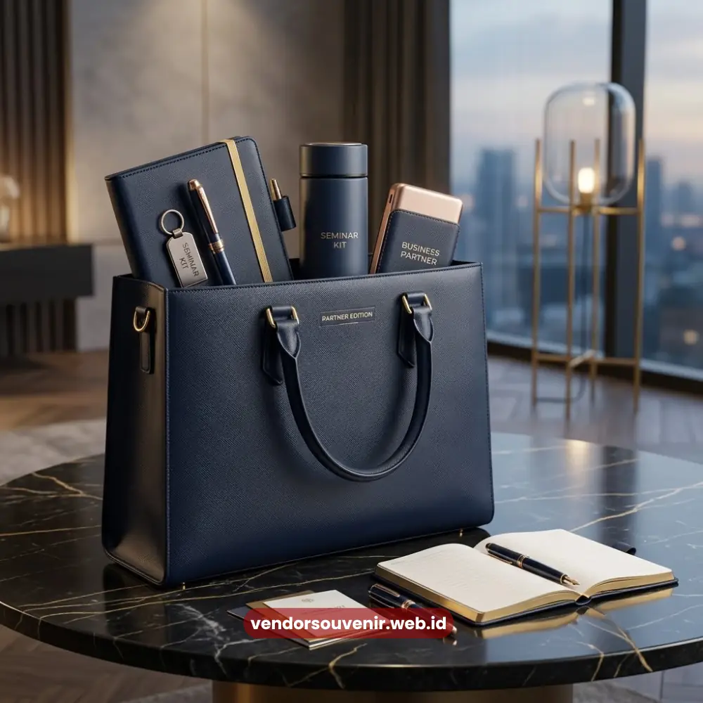
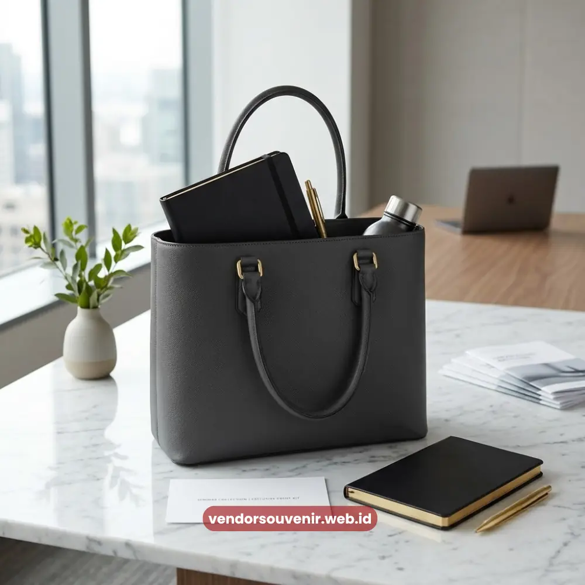

Daftar Isi
Desain tas seminar kit custom yang elegan umumnya mengutamakan warna korporat, logo yang jelas, dan tata letak minimalis agar tetap profesional saat dibawa mitra bisnis.
Pemilihan desain yang tepat dapat memperkuat kesan eksklusif sekaligus memastikan brand perusahaan tampil konsisten di setiap acara.
- Desain minimalis dengan satu warna dominan memberi kesan elegan dan profesional.
- Kombinasi warna korporat memperkuat konsistensi identitas brand.
- Logo sebaiknya ditempatkan pada posisi yang mudah terlihat namun tidak berlebihan.
- Tata letak tambahan seperti tagline dapat memperkuat pesan acara.
- Detail aksesori seperti tali dan ritsleting turut memengaruhi kesan desain keseluruhan.
Mengapa Desain Tas Seminar Kit Custom Perlu Diperhatikan?
Desain tas seminar kit custom perlu diperhatikan karena menjadi representasi visual pertama yang dilihat peserta dan mitra bisnis saat menerima seminar kit.
Desain yang rapi dan profesional dapat meningkatkan persepsi kredibilitas perusahaan penyelenggara acara.
Selain aspek estetika, desain yang konsisten dengan identitas brand juga membantu memperkuat pengenalan merek di benak peserta, terutama jika tas digunakan kembali setelah acara berakhir.
Desain Minimalis dengan Warna Korporat
Desain minimalis dengan satu hingga dua warna korporat dominan memberikan kesan elegan sekaligus memudahkan identifikasi brand secara cepat.
Pendekatan ini banyak dipilih oleh perusahaan yang ingin tampil profesional tanpa kesan berlebihan pada tampilan tas.
Kombinasi warna netral seperti hitam, abu-abu, atau navy dengan aksen warna brand sering digunakan untuk menonjolkan kesan formal pada acara korporat maupun instansi pemerintah.

Desain Minimalis Tas Seminar Kit Custom
Desain dengan Logo Besar di Bagian Depan
Penempatan logo berukuran besar di bagian depan tas memberikan visibilitas maksimal terhadap identitas perusahaan selama acara berlangsung.
Desain ini cocok digunakan untuk acara yang mengutamakan brand awareness sebagai tujuan utama.
Meski demikian, ukuran logo tetap perlu disesuaikan dengan proporsi tas agar tidak mengurangi kesan elegan pada keseluruhan desain.
Bagaimana Menentukan Ukuran Logo yang Proporsional?
Ukuran logo yang proporsional dapat ditentukan dengan mempertimbangkan luas permukaan tas serta jarak pandang audiens saat tas digunakan.
Logo yang terlalu kecil berisiko kurang terlihat, sementara logo yang terlalu besar dapat mengurangi kesan minimalis pada desain.
Desain dengan Kombinasi Dua Warna Brand
Kombinasi dua warna identitas brand dapat digunakan untuk menciptakan kontras visual yang menarik tanpa menghilangkan kesan formal pada tas seminar kit custom.
Pendekatan ini cocok untuk perusahaan dengan palet warna brand yang khas dan mudah dikenali.
Desain dengan Tagline atau Nama Acara
Penambahan tagline singkat atau nama acara pada desain tas dapat memperkuat pesan komunikasi sekaligus memberikan kesan personal terhadap seminar yang diselenggarakan. Elemen ini sering digunakan pada acara peluncuran produk atau seminar tematik.
Apakah Tagline Perlu Ditambahkan pada Setiap Desain?
Tagline tidak selalu wajib ditambahkan, namun dapat menjadi nilai tambah jika acara memiliki tema atau pesan khusus yang ingin ditonjolkan kepada peserta dan mitra bisnis.
Desain dengan Aksen Pola Geometris
Aksen pola geometris sederhana dapat memberikan sentuhan modern pada desain tas seminar kit custom tanpa mengurangi kesan profesional secara keseluruhan.
Pola ini biasanya digunakan sebagai elemen dekoratif pada bagian samping atau bawah tas.
Desain dengan Detail Aksesori Premium
Detail aksesori seperti tali kur berkualitas, ritsleting metal, dan jahitan rapi turut memengaruhi kesan premium pada desain tas seminar kit custom secara keseluruhan. Aksesori ini menjadi pembeda antara tas standar dengan tas berkesan eksklusif.
Desain Multifungsi dengan Kantong Tambahan
Desain dengan kantong tambahan di bagian depan atau samping memberikan nilai fungsional lebih bagi peserta untuk menyimpan barang pribadi seperti ponsel atau kartu nama. Fitur ini meningkatkan kenyamanan penggunaan tas di luar konteks acara seminar.

Wujudkan Desain Tas Seminar Kit Custom Impian Anda
Setiap perusahaan memiliki identitas visual yang berbeda, sehingga desain tas seminar kit custom sebaiknya dirancang secara khusus agar selaras dengan citra brand Anda.
Butuh Bantuan Merancang Tas Seminar Kit Custom?
Tim ahli kami siap membantu Anda menyusun paket seminar eksklusif yang menarik.
Pilihan barang akan disesuaikan dengan ketersediaan budget dan kebutuhan Anda.
Seluruh desain tas akan kami selaraskan dengan identitas visual perusahaan Anda.
Dapatkan penawaran harga terbaik untuk pesanan massal!
Maroon Souvenir
Partner Corporate Gift terpercaya di Indonesia. Berpengalaman melayani ratusan perusahaan sejak 2018.
Lihat Portofolio Kami